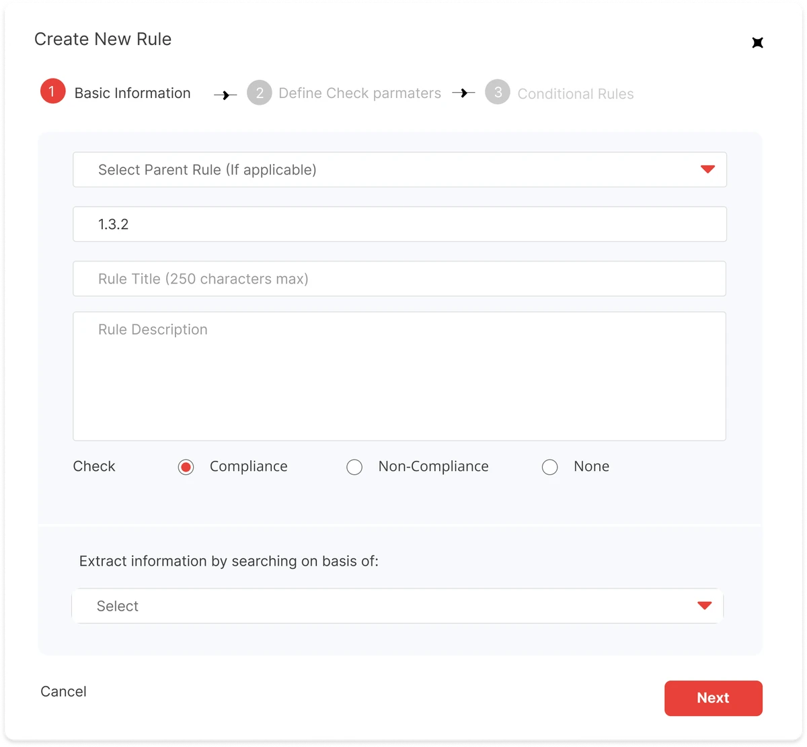
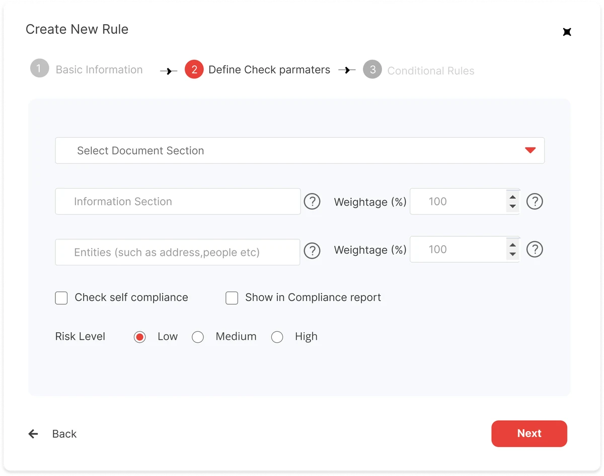
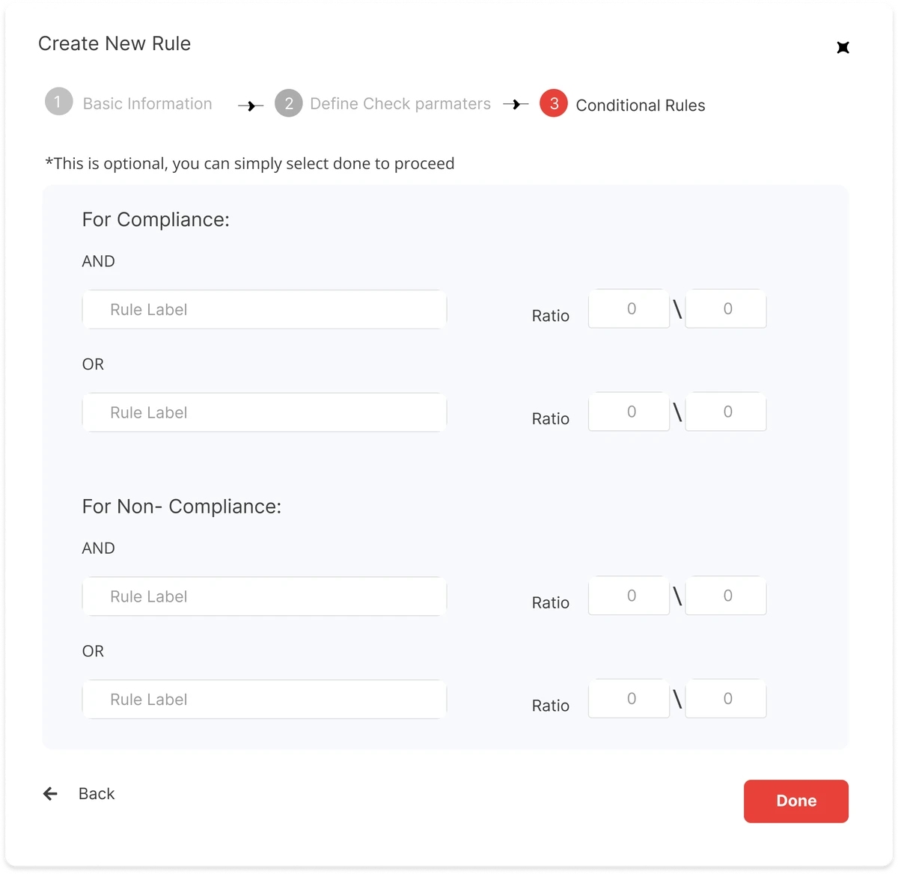
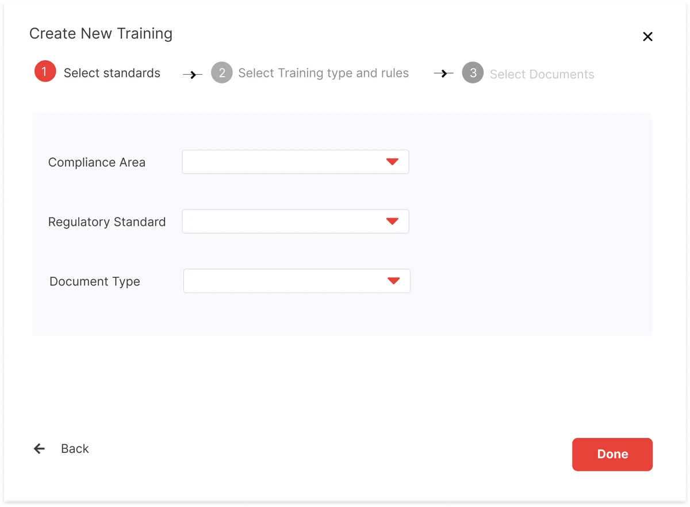
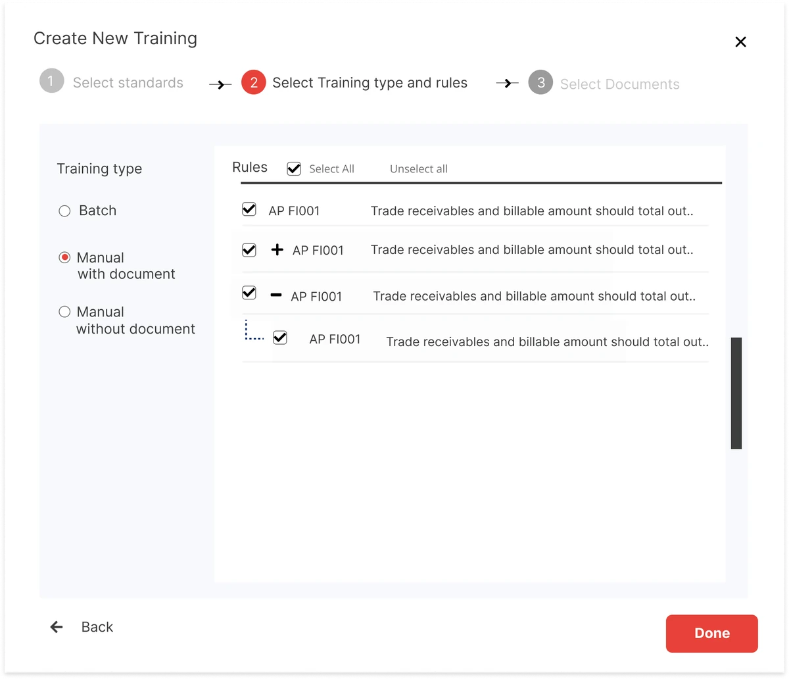
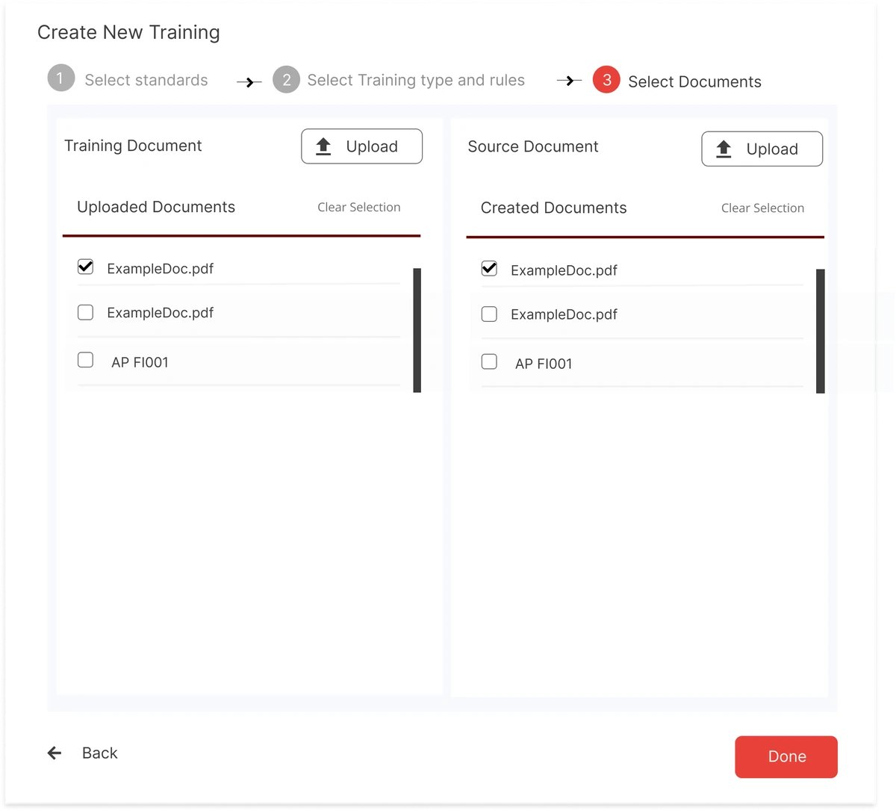
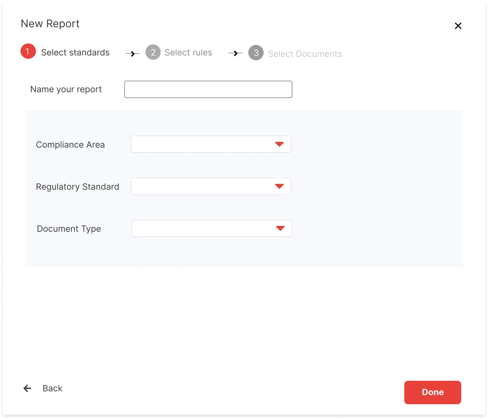
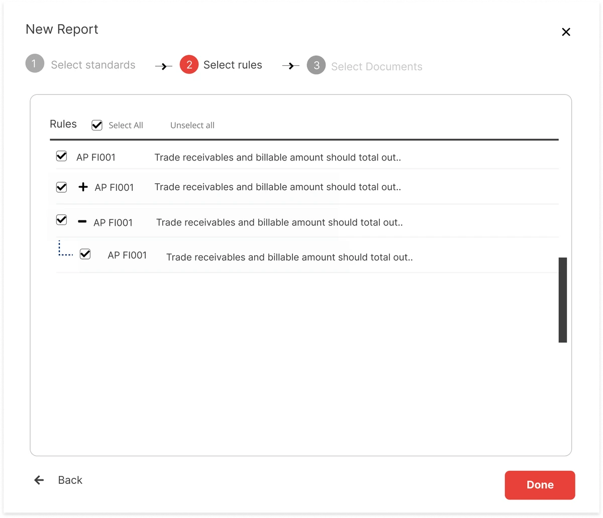
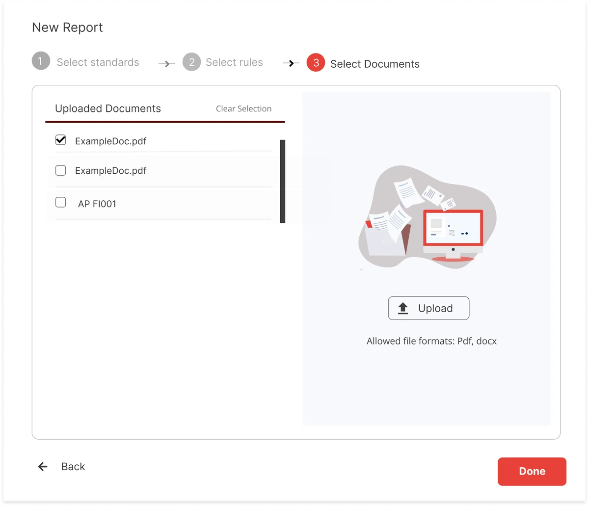

PUTTING COMPLIANCE OFFICERS IN CHARGE OF THEIR AI
A compliance AI used by clients like KPMG and Barclays. My brief: turn it into a standalone SaaS product clients could run without our in-house team.
- INDUSTRY
- Fintech · RegTech
- ROLE
- UI/UX Developer · sole product designerTook a barebones MVP to a complete product, through to engineering handoff.
- TEAM
- 1 peer designer (design system) · CTO/CEO/CMO · PO · 3 developers

CLIENTS WERE MEANT TO TRAIN THE AI THEMSELVES
When the AI got a check wrong, clients sent it to our in-house compliance team. We wrote the rules, retrained the AI and re-ran the check, calling in developers for anything complex. Many clients’ reports were re-generated by us, not them.
Set up standards, such as the FCA’s COBS, and the rules the AI checks.
Train the AI on the client’s own documents.
Run checks and get compliance reports.
Two places: what was already on record, and what I saw sitting with the people doing the work.
- UAT logs
- Change requests
- Support tickets
- Contextual inquiry
- Stakeholder interviews
IT ONLY WORKED FOR PEOPLE WE’D TRAINED.
Technical terms everywhere, and complex rules still needed a developer.
Load, Train and Use were separate tools, so one fix meant moving through all three.
Nothing caught a wrong step or showed how to undo it, so people feared breaking something.
Even our own team found it hard. A client’s compliance officer had no chance.
PUT THE EXPERTS IN THE DRIVER’S SEAT.
The core of a full redesign, from navigation to every flow, on a starter design system. Five moves:
Load, Train and Use lead into each other, the scope you set once filters every screen, and feedback arrives as comments on the report, not by email.
Rules and trainings broken into short, plain-language steps.
Every action shows where it stands. Mistakes are prevented where possible and explained plainly when they happen.









Progressive onboarding, in-app guides and a direct line to support.
The document and the rule sit together, so training happens where the evidence is.

THE TESTING CHANGED THE DESIGN.
I ran one-hour sessions with five of our in-house auditors, the closest stand-in we had for clients’ compliance officers: three tasks on an interactive prototype, then open questions.
- 01Batch training, its own option
They trained rules in batches, so batch became its own training type, separate from manual training.
- 02Training runs in the background
Training took time, so it runs on its own while people keep working, and tells them when it’s done.
The CTO, CEO and CMO wanted different things, across UK, Malaysia and Pakistan time zones.
Each product in the suite had been built with its own UI, so nothing was reusable.
HANDED OFF, READY TO BUILD.
After eight months, the redesign was tested and handed to development with a starter design system and a design process, designed to WCAG 2.1 AA for UK public-sector rules. I left before launch, so I didn’t see it in use. What I stand behind: it was shaped and tested by the people who’d use it.